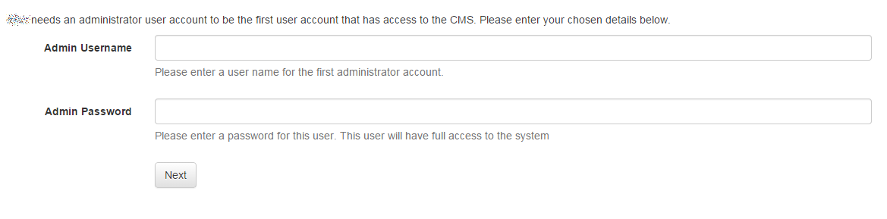
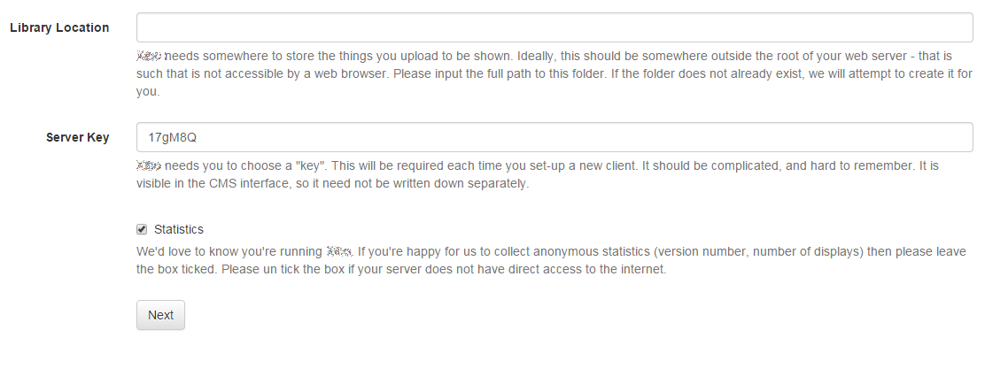
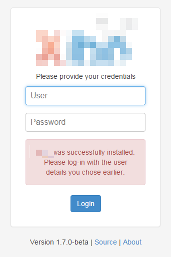

Installation du CMS
Le CMS de Xibo est une application web PHP s'appuyant sur une base de données MySQL. La combinaison PHP / MySQL est très courante en tant que plateforme web et peut fonctionner sur des serveurs Linux ou Windows.
Nous vous donnons quelques instructions de base pour installer votre propre serveur web here, mais nous vous recommandons une solution basée sur le Cloud ou gérée par un service informatique si l'application d'affichage dynamique est primordiale.
Installation
À partir de maintenant nous considérons que vous disposez d'un serveur web avec PHP et MySQL et que l'archive compressée (ZIP ou Tarball) du pack d'installation du CMS a été transférée sur le serveur.
Le processus de base est le suivant:
- Téléchargement et extraction de l'archive
- Démarrage de l'installation
- Configurations requises
- Création de la base de données
- Informations sur la base de données
- Installation de la base de données
- Configuration finale
- Terminé
Téléchargement et extraction de l'archive
L'archive CMS contient un sous-dossier nommé Xibo-server-1.8.4, les contenus de ce dossier doivent être copiés sur un emplacement approprié du web accessible par votre serveur. Pour les configurations les plus simples de serveur web, le nom de ce dossier correspondra au nom de l'url que vous utilisez pour accéder au CMS. Par exemple: http://localhost/Xibo.
L'archive extraite doit ressembler à la capture d'écran ci-dessous:

Il conviendra de créer un dossier pour la bibliothèque de Xibo. Il servira à stocker des images, des vidéos et autres supports basés sur fichiers étant transférés sur le CMS. Cette information sera nécessaire pour les étapes ultérieures de l'installation.
Démarrage de l'Installation
Le fait de se rendre sur http://localhost/Xibo démarrera automatiquement l'installation.
L'installation se fait par le biais d'un "assistant" comprenant en tout six étapes. Il vous guidera tout au long du processus d'installation de Xibo.
Étape 1 - Configuration requise
Le programme d'installation contient une liste détaillée des contrôles de tous les éléments indispensables pour une installation réussie. Chaque élément comporte soit:
- Une coche - l'élément est présent et correct
- Un point d'exclamation - l'élément est présent mais peut ne pas être correctement configuré.
- Une croix - l'élément est manquant.
Tout élément avec un point d'exclamation ou une croix doit être vérifié et on utilisera ensuite le bouton réessayer pour recommencer cette étape.

Ici, les problèmes les plus courants sont l'absence des modules PHP, les paramètres de configuration PHP et les difficultés liées aux fichiers d'autorisation d'accès à la bibliothèque.
Dès que tous les éléments sont cochés appuyez sur suivant.
Création de la base de données
Le CMS peut faire l'installation dans une nouvelle base de données ou dans une déjà existante. Nous recommandons une nouvelle base.
Xibo ne préfixe pas ses noms de table ce qui peut générer des conflits avec du contenu dans une base existante.
Le choix entre une base nouvelle ou existante se fera en commutant entre les deux onglets disponibles.
Informations sur la base de données
Que vous ayez opté pour une base de données existante ou pour une nouvelle, le programme d'installation aura besoin de certaines informations la concernant pour permettre au CMS de se connecter, de lire et d'écrire.

Le programme d'installation aura besoin des informations suivantes:
Hôte Le nom de votre serveur MySQL - dans la plupart des cas ce sera "localhost".
Nom d'utilisateur administrateur Le nom d'utilisateur "root" de votre installation MySQL. Il ne sert que lors de l'installation et n'est utile que si vous avez demandé au programme d'installation de créer une nouvelle base de données.
Mot de passe administrateur Le mot de passe "root". Il ne sert que pour l'installation et n'est utile que si vous avez demandé au programme d'installation de créer une nouvelle base de données.
Nom de la base de données Le nom de la base de données.
Nom d'utilisateur de la base de données Le nom d'utilisateur du CMS utilisé pour se connecter à la base de données - généralement le même.
Mot de passe de la base de données Le mot de passe utilisé pour se connecter à la base de données.
Installation de la base de données
Le programme d'installation va maintenant créer / compléter la base de données de Xibo. Une série de points doit apparaître sur l'écran durant le processus. Cela peut prendre quelque temps. Si tout s'est bien passé, cliquez sur "suivant".
Si à ce stade il y a des erreurs, veuillez vous reporter à la section (résolution des problèmes" de ce manuel.
Mot de passe administrateur
Pour chaque installation au moins un niveau administrateur "superutilisateur" est nécessaire pour gérer le système, appliquer les mises à jour et configurer les paramètres avancés. Le programme d'installation vous demandera de créer cet utilisateur lors de l'étape 3.

Ce nom d'utilisateur et ce mot de passe doivent être conservés en lieu sûr car ils seront nécessaires lorsque l'installation sera terminée.
Paramétrages
L'écran suivant concerne la configuration de Xibo. La première case demande l'emplacement où Xibo stockera les supports que vous allez télécharger. Nous avons déjà créé un dossier pour cela, saisissez en ici le nom par exemple /home/Xibo/library.
La case suivante demande une clé d'accès au CMS - celle-ci permet d'authentifier les afficheurs en lien avec celui-ci. choisissez quelque chose de compliqué, et notez la. Elle ne sera pas utilisée très souvent.
La dernière case à cocher vous demande si vous acceptez d'envoyer des statistiques anonymes au projet Xibo. Nous vous en remercions vivement !

Terminé
L'installation est maintenant terminée et le système est prêt à se connecter.
